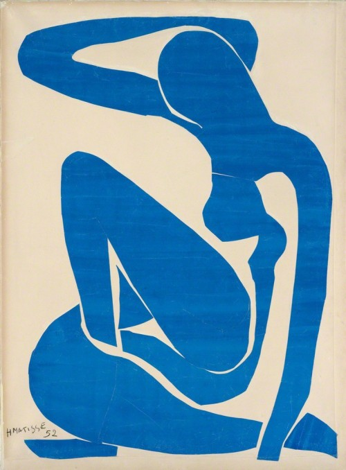
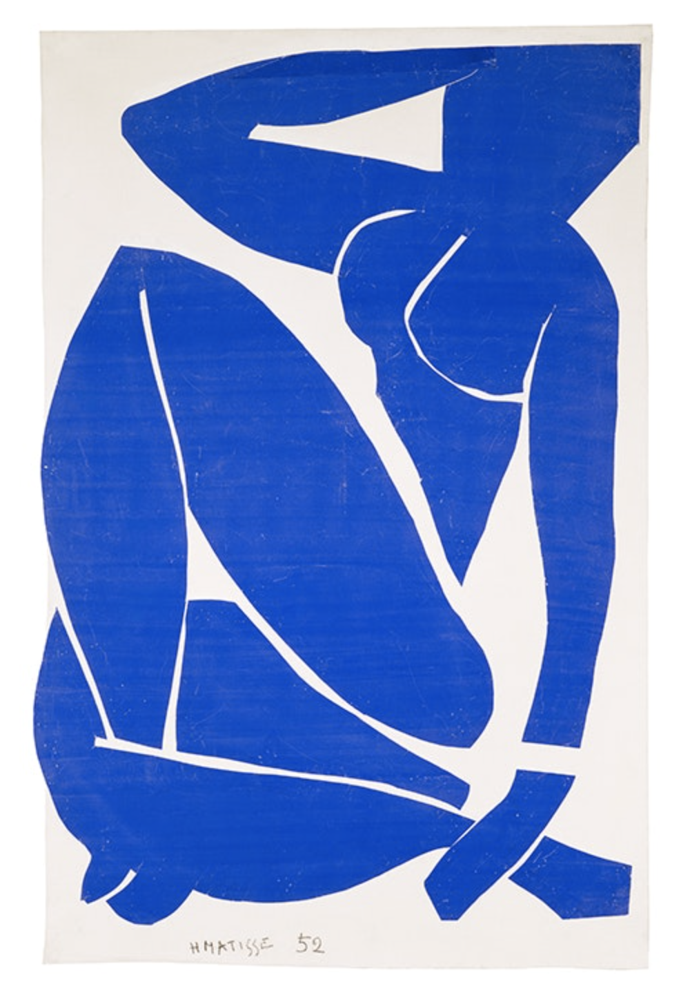
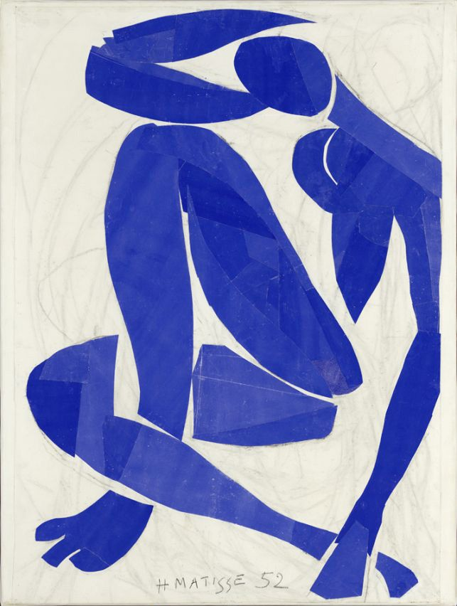
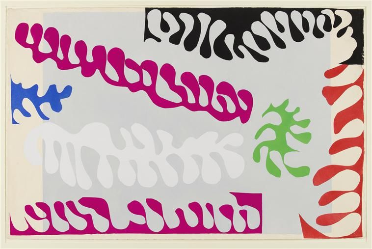
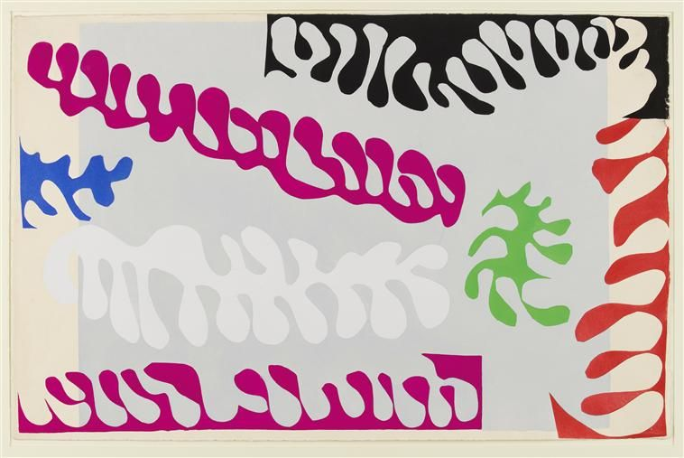

1 / 4

Blue Nude I (Nu bleu I) 1952. Gouache on paper, cutouts
pasted on white paper, mounted on canvas. 41 7/8 × 30 11/16 in (106.3
× 78 cm).
2 / 4

Blue Nude II (Nu bleu II) 1952. Gouache on paper, cutouts
pasted on white paper, mounted on canvas. 45 3/4 × 35 in (116.2 × 88.9
cm).
3 / 4

Blue Nude III (Nu bleu III) 1952. Gouache on paper, cutouts
pasted on white paper, mounted on canvas. 44 × 29″ (112 x 73.5 cm).
4 / 4

Blue Nude IV (Nu bleu IV) 1952. Gouache on paper, cutouts
pasted on white paper, mounted on canvas. 40 1/2 × 30″ (103 × 76 cm).


 The Parakeet and the Mermaid 1952. Gouache on paper, cutouts
pasted and charcoal drawn on white paper, mounted on canvas.

The Lagoon (from Jazz, plate XVII) 1944. Pochoir
on paper
The Parakeet and the Mermaid 1952. Gouache on paper, cutouts
pasted and charcoal drawn on white paper, mounted on canvas.

The Lagoon (from Jazz, plate XVII) 1944. Pochoir
on paper